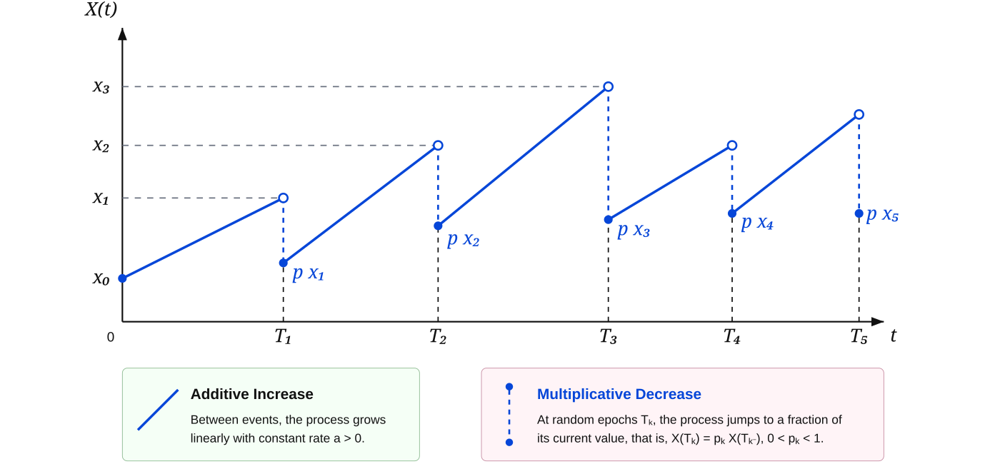
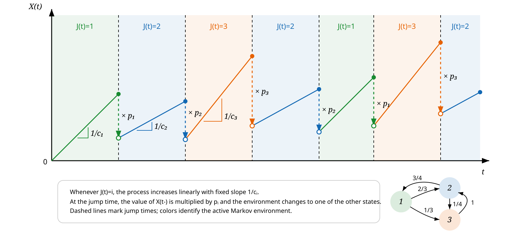
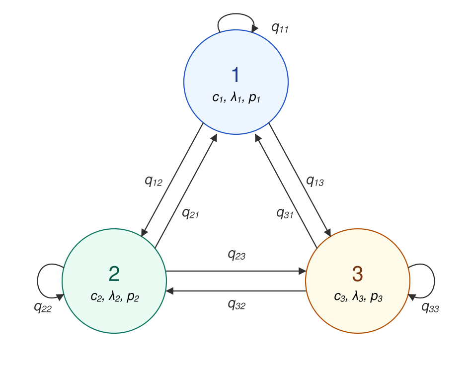

Bernardo D'Auria (University of Padova)
Joint work with Zbigniew Palmowski (Wrocław University of Science and Technology)
AIMD means Additive-Increase Multiplicative-Decrease:
a positive process
that grows gradually and is reduced proportionally at random decrease epochs.
\[ \frac{dX_t}{dt}=\frac{1}{c},\qquad T_n \le t \lt T_{n+1}, \]
\[ X(T_n)=pX(T_n-),\qquad 0\lt p\lt1. \]
\[ X_{n+1}= \begin{cases} X_n + 1/c, & \text{with prob. } (1-\delta),\\ p X_n, & \text{with prob. } \delta \end{cases} \qquad 0\lt p \lt1. \]

TCP congestion control protocol is among classical applications:
it cautiously increases the transmission rate when transmission succeeds,
to decrease it sharply when congestion is detected.
\[ W\longmapsto W+1 \]
Probe the available bandwidth by small additive steps.
\[ W\longmapsto p W,\qquad p\approx\frac{1}{2}. \]
React quickly by reducing the current congestion window.
The TCP motivation led to a probabilistic literature on AIMD and growth-collapse dynamics.
Guillemin, Robert, Zwart (2004)
AIMD algorithms and exponential functionals
Ann. Appl. Probab. 14(1), 90-117.
Boxma, Perry, Stadje, Zacks (2006)
A Markovian growth-collapse model
Adv. in Appl. Probab. 38(1), 221-243.
van Leeuwaarden, Löpker, Ott (2009)
TCP and iso-stationary transformations
Queueing Syst. 63, 459-475.
AIMD is one instance of a broader class of processes with partial resetting:
deterministic or stochastic growth interrupted by resets that keep part of the current state.
Resetting appears in intermittent search and restart mechanisms, from abstract Markov processes to stress-release models.
Evans et al. (2020), Gupta and Jayannavar (2022), Bénichou et al. (2011), Avrachenkov et al. (2013), Borovkov and Vere-Jones (2000).
Queueing applications include catastrophe rates, random clearing events and growth-collapse models.
Artalejo et al. (2006), Kella et al. (2003), Boxma et al. (2006), Löpker and Stadje (2011).
Resetting ideas appear in RNA polymerase recovery, enzymatic reactions, molecular inhibition, pollination and ecological disturbances.
Grünwald and Singer (2010), Roldan et al. (2016), Berezhkovskii et al. (2016), Robin et al. (2018, 2019), Reuveni et al. (2014).
Related models are used in stochastic thermodynamics, quantum resetting, environmental jump processes, insurance and financial crashes.
Fuchs et al. (2016), Mukherjee et al. (2018), Dahlenburg et al. (2021), Mau et al. (2014), Suweis et al. (2010), Akahori et al. (2022), Sornette (2017).
The study van der Hofstad et al. (2023)† looked at exit-time identities for the scalar model.
The model is specified by one triplet $(c,\lambda,p)$:
that determines the dynamics of the $X$ process:
\begin{align*} dX_t &= dt /c ,\qquad T_n \le t \lt T_{n+1},\\ X(T_n) &= p X(T_n-),\\ T_{n+1}-T_n &\sim \Exp(\lambda). \end{align*}
A finite-state Markov environment $J$ modulates all local parameters.
\[ (c_i,\lambda_i,p_i),\qquad \mQ=(q_{ij}),\qquad i,j\in\{1,\dots,m\}. \]
The scalar transforms of the exit-times become matrix-valued transforms, indexed by the starting and ending environment regime.
\begin{align*} \{J(T_n)=i\} &\implies \{J(T_{n+1})=j\} \text{ with prob. } q_{ij},\\ dX_t &= dt /c_i ,\ J(t)=i \qquad T_n \le t \lt T_{n+1} \\ X(T_n) &= p_i X(T_n-),\\ T_{n+1}-T_n &\sim \Exp(\lambda_i). \end{align*}
†R. van der Hofstad, S. Kapodistria, Z. Palmowski, S. Shneer. J. Appl. Probab. 60 (2023)

For fixed levels $0\le b\lt a$, define
\[ \tau_a^\up=\inf\{t\ge0:X_t\ge a\},\qquad \tau_b^\down=\inf\{t\ge0:X_t\le b\}. \]
\[ \ Z_{ij}(w,x\up a)=\E_{x,i}\!\big[\e^{-w\tau_a^\up};\,J(\tau_a^\up)=j\big]. \]
\[ L_{ij}(w,x\up_b^a)=\E_{x,i}\!\big[\e^{-w\tau_a^\up};\,\tau_a^\up\lt\tau_b^\down,\,J(\tau_a^\up)=j\big]. \]

Starting after a jump at time $t_n$ at level $x_n$ and state $i_n$, the level just after a new jump at time $t_{n+1}$ is
\[ x_{n+1}=p_{i_n}\left(x_n+\frac{t_{n+1}-t_n}{c_{i_n}}\right). \]
The next state $i_{n+1}$ is selected randomly according to the distribution given by the $i$-th row of transition matrix $\mQ$.
Hence a first-step equation mixes:
Let $\vecz=(z_i)$ and $\vecgamma=(\gamma_i)$, with:
\[ z_i=c_i(\lambda_i+w),\qquad \gamma_i=\frac{c_i\lambda_i}{p_i}. \]
Diagonal and selector matrices:
\[ \mExp(\vecv)=\diag(\e^{v_i}),\qquad \mDelta(\vecv)=\diag(v_i), \]
\[ \mE_i=(\delta_{ik}\delta_{i\ell})_{k\ell}. \]
Some useful matrices:
\[ \mA(s)=\mDelta\!\left(\frac{\vecgamma}{\vecz-s}\right),\qquad \mB=-\mDelta(\vecgamma)^{-1}. \]
For $0\lt x\lt a$, upward passage is continuous, so the process must cross $x$ before $a$.
\[ \mZ(0\up a)=\mZ(0\up x)\,\mZ(x\up a). \]
Consequently,
\[ \boxed{\;\mZ(x\up a)=\mZ(0\up x)^{-1}\mZ(0\up a)\;} \]
and we are left with computing \(\mZ(0\up x)\) for any \(x\ge0\).
\[ \tau_a^\up(0,J(0)) \disteq \tau_x^\up(0,J(0)) + \tau_a^\up(x,J(\tau_x^\up(0,J(0))). \]
First-step analysis at the first jump gives
Here $(x\le a\vecp)_i = \one\{x \le a p_i\}$.
Let $\tmU(s)=\int_0^\infty \e^{-sa} \mZ(0\up a)^{-1}\,da$. Then
Iterating this equation yields
The series converges because repeated multiplications by $p_i\lt 1$ push the residuals quickly towards $0$.
\[ Z^\up(w;x,a)=\frac{Z^\up(w;0,a)}{Z^\up(w;0,x)} \]
\[ Z^\up(w;0,x)= \left[\sum_{k=0}^{\infty} \frac{(x/(w+\lambda))^k}{k!}\, (\lambda/(w+\lambda);p)_k\right]^{-1}. \]
Division is replaced by matrix inversion.
A scalar $q$-series is replaced by the non-commutative series $\mD(s)$.
The matrices $\mE_i\mQ$ trace the regimes selected at each jump.
From $q$-calculus: $(x;q)_n = (1-x)(1-xq)(1-xq^2)\cdots(1-xq^{n-1})$
For $x>b$, first-step analysis gives a renewal equation in the opposite direction:
With $\tmZ^{\down}(s)=\int_0^\infty\e^{-sx} \mZ^{\down}(x,b)\,dx$,
The matrix $\mH$ is then recovered by solving a system of equations at the limiting arguments obtained for $s \to z_h/p_h$, $h\in E$.
Let $\mL(x\up_b^a)$ denote the transform of the upward exit time before downward exit.
We use a
constructive recursion to compute it.
Assuming $\mL(y\up_b^a)$ known for all $y\lt a$, with $\rho\lt\min_i p_i$,
then $\mL(x\up_b^{a/\rho})$ is
obtained for $x=a$ as
and for $x \lt a/\rho$ as
\[ \mL(x\up_b^{a/\rho})=\mExp(-(a/\rho-x)\vecz)+\mH(x)\mL(a\up_b^{a/\rho}). \]The matrix $\mH(x)$ with components \(H_{ij}(x)=\gamma_i\e^{z_ix/p_i} \int_{p_ix}^{p_i a/\rho}\sum_h q_{ih}L_{hj}(w,y\up_b^a)\e^{-(z_i/p_i)y}\,dy \) can be explicitly computed.
We have that, for any \(x\in[b,b/p)\), where \(p=\max_i p_i\),the following identities hold:
\begin{align*} %\mL\!\left(b\!\up_b^x\right) &= \mExp\!\bigl(-(x-b)\vecz\bigr),\\ \mL\!\left(x\!\up_b^{b/p}\right)& =\mExp\!\bigl(-(b/p-x)\vecp \vecgamma\bigr). \end{align*}
Proof.
Assume that \((X(0),J(0))=(x,i)\), then since \(y p_i<b\), for all \(y\in[x,b/p)\), we have
\[
\{\tau_{\uparrow b/p}<\tau_{\downarrow b}\}
=
\{T\ge c_i(b/p-x)\},
\]
and
\[
L_{ij}\!\left(x\up_b^{b/p}\right)
=
\delta_{ij}\P_{x,i}(\tau_{\uparrow {b/p}}<\tau_{\downarrow b})
=
\delta_{ij}\P_{x,i}(T\ge c_i(b/p-x))
=
\delta_{ij}\exp\!\left\{- \lambda_i c_i(b/p-x)\right\}.
\]
Define
\[ L^{\down}_{ij}(w,x\down_b^a)=\E_{x,i}\big[\e^{-w\tau_b^\down};\tau_b^\down\lt\tau_a^\up,\,J(\tau_b^\down)=j\big]. \]
\[ \boxed{\;L^{\down}(w,x\down_b^a)=Z^{\down}(w,x,b)-L(w,x\up_b^a)Z^{\down}(w,a,b)\;} \]
They looked at the upward exit time for the process \[ X_t^{-} = \inf_{s \le t} X_s \wedge X_0 ,\] that correspond to the free process reflected at it's minimum.
The used technique is to show that the processes \[ e^{-w\tau_{a,b}(x)\wedge t} F\bigl(w,X_{\tau_{a,b}(x)\wedge t}\up_b^a\bigr) -\int_{0}^{\tau_{a,b}(x)\wedge t} \mathcal{A}^{\dagger} F\bigl(w; X_s\up_b^a\bigr)\, ds \] is a local martingale, where \[F(w,x\up_b^a)=Z(w,x\down_b)+L(w,x\up_b^a)\]
Defining a similar object for the modulated version of the reflected process,
\[ \mF(x\up_b^a) \approx \mZ(x\down_b)+\mL(x\up_b^a)\]
does not work.
The natural Markov modulated extension of \(L(w,x\up_b^a)\) is \[\mL(x\up_b^{\veca})\] where \(\veca\) is a vector.
In general \[ \tau_{\veca}^\up(0,J(0)) \not\disteq \tau_x^\up(0,J(0)) + \tau_{\veca}^\up(x,J(\tau_x^\up(0,J(0))),\] that means \[\mZ(0\up\veca)\not=\mZ(0\up x)\,\mZ(x\up\veca). \]
What instead works is \[ \tau_{\veca}^\up(0,J(0)) \disteq \tau_{x\wedge\veca}^\up(0,J(0)) + \tau_{\veca}^\up(x,J(\tau_{x\wedge\veca}^\up(0,J(0)))),\] and \[\mZ(0\up\veca) =\mZ(0\up x\wedge\veca)\,\mZ(x\up\veca). \]
For $x\le\ell$,
\[ \mZ(x \up \veca) = \mZ(x \up \veca\wedge\ell) \, \mZ(\ell \up \veca). \]
Let $\wedge \veca=\min_i a_i$. For $x\lt\wedge \veca$,
\[ \mZ(x\up \veca\wedge(\wedge \veca))=\mZ(x\up \wedge \veca), \]
which is the fixed-barrier problem
already solved.
At each new level, solve only for the active regimes.
Inactive regimes contribute with an identity matrix.
Assume $\mZ(y\up \veca\wedge\ell)$ is known for $y\lt\ell$. Choose $\rho$ so that $p_i x\lt\ell$ for $x\in[\ell,\ell/\rho)$.
\[ H_{ij}(x)=\gamma_i\e^{z_ix/p_i}\int_{p_ix}^{p_i\ell/\rho} \sum_h q_{ih} Z_{hj}(w,y\up \veca\wedge\ell)\e^{-(z_i/p_i)y}\,dy. \]
Upward skip-free motion still gives clean multiplicative identities.
First-step analysis yields matrix-functional equations with rescaling $s\mapsto s/p_i$.
The scalar scale-function paradigm becomes a matrix scale-function paradigm.
Thank you.
Bernardo D'Auria, University of Padova
Joint work with Zbigniew Palmowski
Upward crossing is by creeping:
\[ X(\tau_a^\up)=a. \]
Downward crossing is by a jump:
\[ X(\tau_b^\down)\le b. \]
This asymmetry is why upward identities factor cleanly, while downward identities require integral renewal equations.